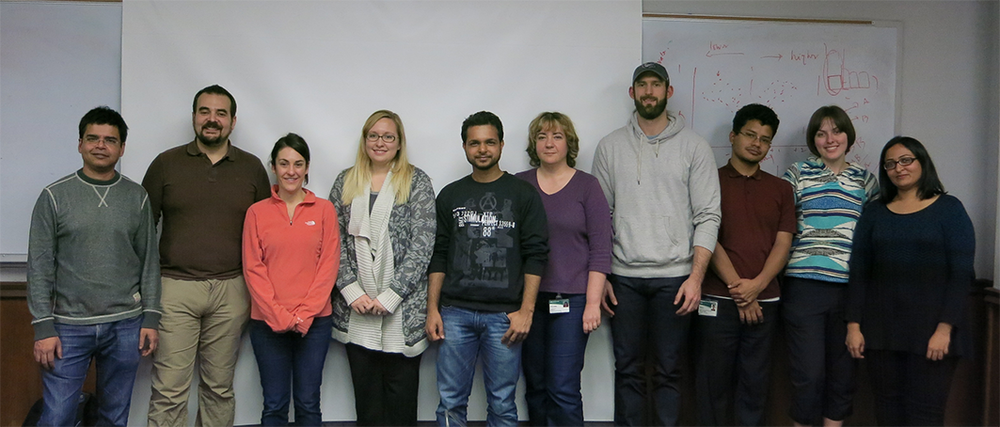
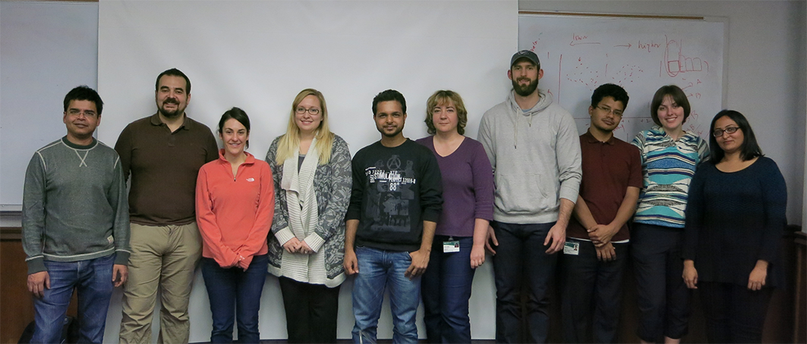
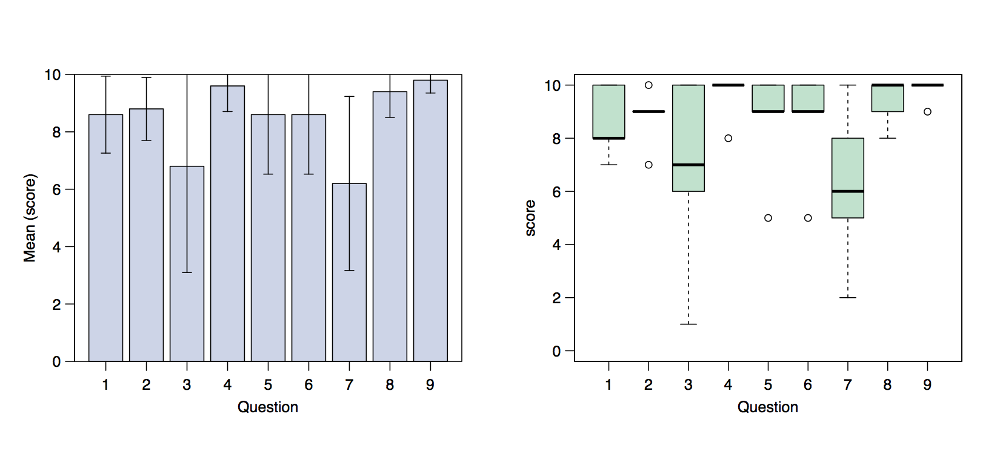

CB2-201: Computational Biology and Bioinformatics
The first edition of the CB2-201 Computational Biology and Bioinformatics course
has been succesfully completed by 8 qualified participants.
The initial schedule
(16-27 February 2015)
was modified due to UAB shutdown on February 25 for weather conditions.
In this page we include all the material used during the course, and the evaluation anonymously submitted by the students. We would like to thank the participants for the fruithful comments that will allow us to improve the quality of our course.

In this page we include all the material used during the course, and the evaluation anonymously submitted by the students. We would like to thank the participants for the fruithful comments that will allow us to improve the quality of our course.

- Materials
Registration form Technical aspects and high-performance computing (HPC) 101 February 16, 2015. Biological Data Sources and File Formats February 17, 2015. Sequence Alignment February 18, 2015. Sequence homology search: Talk and Handout February 19, 2015. Molecular Evolution: Talk and Handout February 20, 2015. Protein Structure, Mutational Effects on Structure. Variant Effect Predictors February 23, 2015. NGS Introduction and quality assessment: Talk and Handout February 24, 2015. Alignment to Reference and Variant Calling February 26, 2015. Variant Analysis, VCF, Tabix February 27, 2015. RNAseq analysis Talk and Handout March 3, 2015. Final problem set - Evaluation
In this page we included the evalaution form anonymously compiled by the participants to evaluate the quality of our course. Answers submitted with numbers from 1 (worst) to 10 (best) have been included in the following statistics calculated by R. The evaluation form was compiled by 5 participants which rated the course with an average score of 8.5 over 10 (see data). 
- Additional Materials
The Art Of Sequence Analysis - Information
For more informartion about the course please contact Malay Basu or Emidio Capriotti.
University of Alabama at Birmingham.
619 19th St. South, WP220.
Birmingham (AL), 35249 (USA).